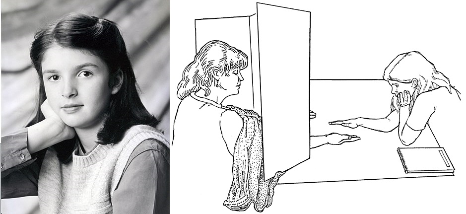
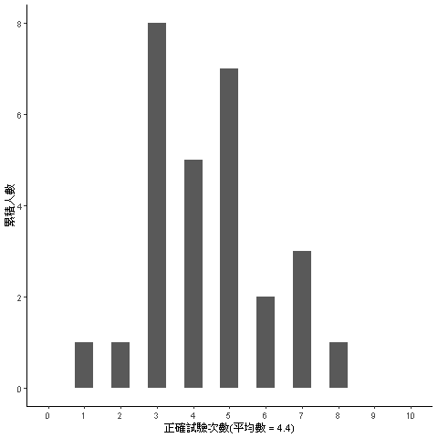

第9單元:統計思考開門
科學創見從對現象的推測開始，只要好奇親眼目睹或耳聞的現象之發生原因，推測如何發生的過程，就有最初步的假設(Hypothesis)。假設要成為讓人信服的說法，需要有正面證據(Positive Evidence)的支持，以及不被反面證據(Negative Evidence)推翻。決定該找到什麼樣的證據，還有收集證據的方法，與假設放在一起就構成科學思考(Scientific thinking)。當證據是需要經過隨機化(Randomization)取得的資料(Data)，並且使用機率模型(Probability Model)整理與驗證資料裡的正反面訊息，這種科學思考就是統計思考(Statistical Thinking)。
統計思考實例：Emily Rosa的專題研究
曾擔任美國神智學會(Theosophical Society in America)會長的Dora Kunz在1970年代起提倡治療性撫慰(therapeutic touch)，幫助病患紓解病痛與焦慮。提倡者主張人類身體自然散發能量場(energy field)，受過訓練的治療師能不接觸患者身體，感應患者的能量場，並運用自身能量撫慰患部，紓解病患的痛苦。到了今天，包括美國在內，全球大約有80所護理學校列治療性撫慰為正式課程，光是北美地區有80所左右的醫療機構允許護理人員使用治療性撫慰幫助住院患者。有興趣的讀者使用關鍵詞“therapeutic touch”搜尋網路資訊，還能發現有組織定期舉辦教育工作坊。
Figure 1: 正在接受治療性撫慰的男士。圖像取自HEAVYSTONES.com
1998年當時11歲的美國女孩Emily Rosa，想知道治療師感應人體能量場的真實能力，改造流傳已久的擲硬幣遊戲，設計出一套簡易測試。她請治療師坐在同一張桌子對面，兩人之間有一塊隔板，雖然能對話但是看不見彼此，隔板下方有兩個孔洞。測試時治療師將雙手穿過孔洞伸到另一邊，每次測試前測試者先投擲硬幣，決定要將自已的手伸到治療師的那一隻手掌上方8至10公分處，再請治療師說出測試者的手是在左手還是右手上方，每位治療師反覆進行十次測試。以擲硬幣對賭的所有可能性來看，Emily假設如果治療師真的有感應人體能量場的能力，十次測試的答對率應該比完全亂猜(50%)高出許多，當年的Emily認為一位治療師至少要答對8次，才能證實真有本事。

Figure 2: 左：Emily Rosa 11歲時的留影，取自維基百科。右：Emily Rosa施測現場素描，取自Rosa et al. (1998) Figure 1
在父母的幫助下，1996年Emily邀請到15位實際從事治療性撫慰的人士參與測試，一年後因為電視台的專訪，又找了曾參與先前研究在內的7位等共13位人士，進行第二次研究。Emily與父母以及一位醫師一起將兩次研究結果寫成論文發表(Rosa et al. 1998)。論文中的長條圖呈現28人次的正確次數，圖3是原始統計圖的重製版本：
## png
## 2
Figure 3: Emily Rosa的研究結果
測試結果究竟證實了治療師們真有本事？還是揭露治療性撫慰的誇大不實？回答這些問題之前，我們先來解析這件專題研究的思路。如果你認為Emily Rosa的假設與測試方法是有道理的，或者你認為可以做更好的改良，那麼你已經有科學思考的基本能力。Emily的專題研究讓我們知道，能以科學思考探究的問題，必定有可測試的假設，以及可實作的測試方法。更嚴謹的話，還要加上正反證據的成立條件。
那麼為何Emily Rosa的專題研究是一種統計思考？首先Emily提出的假設有預期測量結果的發生機率：如果治療師們沒有宣稱的本事，全部的答對率應該和丟硬幣猜是正面還是反面向上的機率一樣：50%。如果治療師們真的有本事，答對率應該明顯高於50%，這也是正面證據與反面證據有效的條件。至於Emily使用的測試方法，看上去可以有效累積每位治療師的答對率。
圖 3 標示21位治療師的平均答對次數是4.4次，表示10次測試裡有4至5次是正確的。平均4.4次似乎與50%差不了多少，憑這個數值，Emily能推斷這群治療師的本事言過其實嗎？
統計思考養成途徑
Emily Rosa的報告裡是以數值呈現的機率資訊，判斷治療師有本事的可能性，有沒有高過治療師沒有本事的可能性。她所收集的資料，能以全部治療師的正確反應次數估計可能性，也可以每位治療師的正確率估計可能性。本書運用這個案例，介紹每位統計初學者首先學習的單一樣本樣本推論統計(第??單元)。
學習第一套推論統計之前，我們要先認識描述資料的方法，也就是描述統計。描述統計的功用是劃清要進行推論的資訊，符合想確證的假設。好的描述統計能展現分析者對問題的理解，以及從資料獲得的判斷。在第??單元，我們將學習類別變數與連續變數的資料尺度以及統計量數，還有表現各種變項組合的統計圖表。
接著在第??單元，我們要重新學習機率事件的計算，以及機率分佈的概念，再次深入了解何謂條件機率，以及運用貝氏定理計算事後機率。到了第??單元，我們要運用程式模擬認識機率分配，探討為何在隨機化條件下收集的資料，才是能代表母群的樣本。這兩個單元都會運用相同的案例，介紹機率的計算與模擬。
充分認識機率的計算與模擬，我們就能運用這些觀念與方法，理解推論統計的運作邏輯。第??單元以TT治療師的測試分析，學習假設檢定的正確運用方法，我們將了解如何考量無窮次的型一與型二錯誤率，謹慎推論一次的顯著性檢定結果；還有初步認識母數推論統計與無母數推論統計的差異。
第??單元將前進到相依樣本的推論統計，在此將認識第一種效果量：標準化平均數差異，以及如何搭配樣本數及考驗力等資訊，判斷推論結果的可靠性。第??單元以獨立樣本的推論統計範例，讓初學者認識實驗設計如何影響分析結果。
第??單元將認識第二種效果量：相關係數，以及最簡單的一元一次線性迴歸式。這個單元的範例與第??單元與第??單元有所關聯，以此引導初學者了解兩種推論方法與變異數分析的關聯性。進入第??單元，就能運用線性迴歸了解正確使用變異數分析的關鍵，以及解讀及呈現分析結果的方式。
統計方法運用指南
本書編排架構參考Rivka de Vries博士建置的教學網站統計貓咪(statkat)，以分析問題的變項結構設定篇章介紹統計方法。鑑於本書預設讀者是尚未有豐富統計分析實務的初學者，集中介紹適用單一自變項與單一應變項之間，或者只有一個獨變項與一個依變項的統計方法。我將本書介紹的方法，與章節連結整理於下表：
| 依變項為類別變項 | 依變項為連續變項 | |
|---|---|---|
| 無獨變項 | 二項檢定( 單元?? ) | 單一平均數z檢定( 單元?? ) |
| 獨變項為相依樣本 | McNemar氏檢定( 單元?? ) | 相依樣本t檢定(單元??) |
| 獨變項為獨立樣本 | 卡方獨立性檢定(單元??) | 獨立樣本t檢定(單元??) |
| 單一自變項為連續變數 | 皮爾森相關(單元??), 簡單迴歸(單元??) | |
| 單一獨變項有三組以上獨立樣本 | 獨立樣本變異數分析(單元??) | |
| 單一獨變項有三組以上相依樣本 | 重覆量數變異數分析(單元??) |
讀者除了可由表格快速找到自已想查閱的章節資料，這份表格也是統計貓咪(statkat)提供的方法檢索表微型版。當讀者熟練本書介紹的統計方法之後，一旦有需要學習其他統計方法，可經由該網站尋找相關資訊。該如何找到自己需要的統計方法？就要從了解變項的性質開始，所以下一章要好好認識描述統計。
總結
- 科學思考講究平等對待正面證據與反面證據；統計思考透過機率模型評估各種證據的可能性。
- 養成統計思考需要洞察肯定或否定理論的證據皆可能發生，也需要不斷自我提醒，當下得到的結果只是長久觀察的一種可能性。
- 任何需要統計分析的資料必有依變項，分析之前先確認測量尺度，能掌握合適的分析方法。
習題
安裝與設定JASP與jamovi。如果電腦有連接網路，由jamovi的模組選單(Modules)，下載試用
Rj、statkat、以及learning statistics with jamovi。根據你的學習指南，開啟指定的JASP與jamovi資料收藏檔案，進行第一次嘗試並儲存分析結果。
註冊OSF與管理管理專案，上傳展示你的第一次分析結果。
參考文獻
Rosa, Linda, Emily Rosa, Larry Sarner, and Stephen Barrett. 1998. “A Close Look at Therapeutic Touch.” JAMA 279 (13): 1005. https://doi.org/10.1001/jama.279.13.1005.
本文原刊於舊站，2026-10 自網站備份復原。